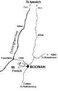
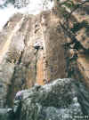

By Lee Skidmore, November 1999
Last updated 16 July, 2000

| Frog Buttress Climbing Guide |
By Lee Skidmore, November 1999 Last updated 16 July, 2000 |
|
|
|
|
'Frog' is probably considered the crown jewel of Queensland climbing. It's about 1.5 hours drive of Brisbane. Follow the signs to Mt. French National Park from Boonah. Frog is located inside the National Park. Check out the map on the right (thanks to the UQ climbing club page).
GUIDEBOOK |
 |
|
Above: Map to Frog Buttress |
CAMPING
The campsite is very good, and it was upgraded in 1997 so the sites are bigger and flatter, as opposed to the old sites, where your spine would say
"hey, stop that" when you lie down. Much better now. The cost is something like $5 per site per
night, but you need to book in advance to secure a site. There is water and barbeques at the campsite, and, get this, flushing toilets. The down side is there are no showers, but if you are sneaky, you'll manage a hot shower within a short drive of the Park. Many climbers don't bother cooking and simply drive down the road to the Dugandan pub every night. And why not? - the food at the Dugandan is excellent.
I hate to have to say this, but Frog, as in most climbing areas in SE Queensland is notorious for crime. Climbing gear has a tendency to go missing if you leave it out. For example, do not leave a bag chock-full of your new gear on the boot of your car while you carry the tents to the site. Trust me. (There is a funny story that goes in here about how Menno actually found and apprehended the
punks that stole his gear weeks after the event).
WHEN TO GO
Any time is okay, but summer is very hot and during winter you'll want your woollens
(goretex) at night. During summer, climb from sunrise to mid-morning and then break for a siesta and come back down and continue after it cools down.
The most comfortable time to plan to stay at Frog is in Spring and Autumn.
Remember to book ahead.
|
THE CLIMBING The thing that will strike you about Frog is that there are some climbs done there that are so incredibly hard and bold (read: death-falls) that they will only ever get ascents once in a blue moon if they ever do. Some climbs are truly awe-inspiring. |
 |
|
Above: Old Guard climber Chris Frost enjoying Epic Journey (23) one more time, in August 1998 |
A PRIMER
If you are just starting out at Frog and want some practice on cracks, you should probably do some of these easy routes to start:
| Condor | 18m 11 | Good body crack at the top! |
| Witches Cauldron | 17m 12 | Nice easy lift-shaft. |
| Electric Mud | 10m 13 | A relaxing corner. |
| Shit Heap | 10m 14 | This is the route for jamming practice. |
| Theory | 25m 14 | A nice and varied longer route. A must! |
| Electronic Flag | 40m 14 | A long pitch of fun. |
| Mechanical Prune | 18m 15 | This was my second natural pro lead ever. |
However, the high quality climbing at Frog starts at grade 20. Frog's real strength lies in the 19 to 23 grade cohort. Most beginners will find 'easy' routes very hard for the grade, but if you can get into the low 20s, you'll find most routes quite reasonable for the grade.
[Go to Frog Buttress Climbing Gallery]

{kind=link}
{kind=link}